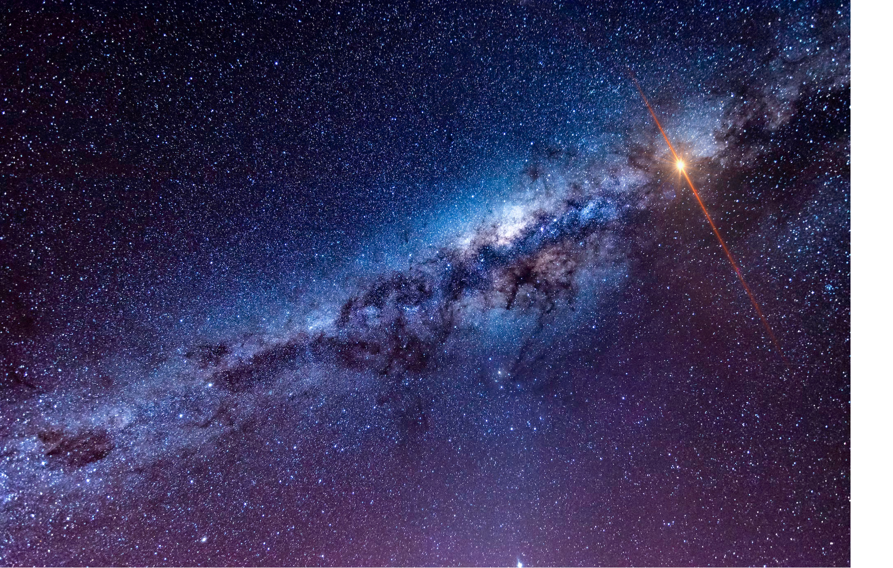

The curious world of FRBs!
What are FRBs?
FRBs are extemely energetic, extremely luminous bursts in the radio spectrum that last for merely a few milli-seconds! They are extra-galactic in nature (i.e., found outside of our Milky Way galaxy) and are 10 orders of magnitude more luminous than a galactic pulsar!
What causes FRBs?
Short answer: WE DO NOT KNOW!
At first we thought that these bursts were caused by some extra-terristrial intelligence! (Well, that is not super super plausible, as we now feel...)
Hmm, so what else could give rise to them? The progenitor theories are divided into two main forms:
Cataclysmic events: These are theories when the objects giving rise to these events are destoyed after its creation. Examples of these kind of theories include events like a core-collapse supernova (CCSN) , Super-Luminous Supernova (SLSN) or a Long Gamma Ray Burst (LGRB). They can also be formed from compact object mergers (Neutron Star, White Dwarf and Blck Hole binary mergers)
Non-cataclysmic events: These are theories when the objects giving rise to these events are not destoyed after its creation. Examples of these kind of theories include events in which a magnetar gives rise to an FRB, or when a pulsar gives off giant flares, or a burst caused by a young Super Nova Remnant (SNR) pulsar.